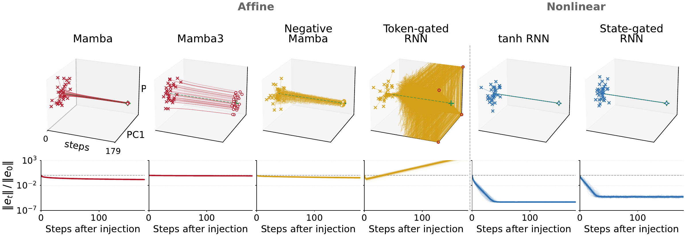
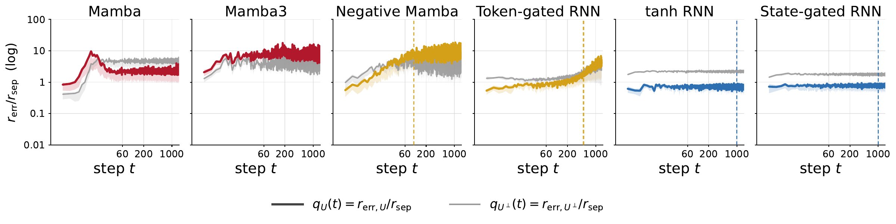

Can state-space models track states? Prior work shows that affine models such as state-space models and linear attention are expressive enough to represent many state-tracking tasks, yet in practice they lose track on long sequences.
We propose another lens: error control. A recurrent model updates its hidden state at every step, so small errors build up, and it must remove the ones that push it toward a wrong state. Affine models cannot: keeping every state in place forces them to leave such errors untouched, so they track correctly only until the accumulated error grows too large relative to the distance between states. Models whose update depends on the state itself can remove these errors.
Abstract
The theory of state tracking in recurrent architectures has predominantly focused on expressive capacity: whether a fixed architecture can theoretically realize a set of symbolic transition rules. We argue that equally important is error control, the dynamics governing hidden-state drift along the directions that distinguish symbolic states. We prove that affine recurrent networks, a class of models encompassing State-Space Models and Linear Attention, cannot correct errors along state-separating subspaces once they preserve state representations. Consequently, practical affine trackers do not learn robust state tracking; rather, they learn finite-horizon solutions governed by accumulated state-relevant error. We characterize the mechanics of this failure, showing that tracking remains readable only while the accumulating within-class spread remains small relative to the between-class separation. We demonstrate empirically on group state-tracking tasks that this breakdown is predictable: tracking collapses when the distinguishability ratio crosses the readability threshold. Across trained models, the point of this crossing predicts the horizon at which downstream accuracy fails. These results establish that robust state tracking is determined not only by an architecture's theoretical expressivity but crucially by its error control.
Expressive capacity does not predict state-tracking robustness
All models are trained with curriculum learning up to sequence length 60 on three group state-tracking tasks of increasing difficulty: parity \(C_2\), the cyclic group \(C_6\), and the symmetric group \(S_3\).
| Model | Dynamics | \(C_2\) | \(C_6\) | \(S_3\) | |||
|---|---|---|---|---|---|---|---|
| L1 | L2 | L1 | L2 | L1 | L2 | ||
| Mamba | Affine | ✗ | 60 | ✗ | 60 | ✗ | ✗ |
| Mamba-3 | Affine | 200 | 300 | 100 | 100 | ✗ | 60 |
| AUSSM | Affine | 1000 | ✗ | 200 | 100 | ✗ | ✗ |
| Simple AUSSM | Affine | 300 | 400 | 100 | 100 | 60 | 100 |
| Negative Mamba | Affine | 1000 | 1000 | 100 | 200 | 100 | 200 |
| Linear RNN | Affine | ✗ | 100 | ✗ | 60 | ✗ | ✗ |
| Token-gated RNN | Affine | 1000 | 700 | 300 | 400 | 500 | 1000 |
| tanh RNN | State-dependent | 1000 | 1000 | 1000 | 1000 | 1000 | 1000 |
| State-gated RNN | State-dependent | 1000 | 1000 | 1000 | 1000 | 1000 | 1000 |
The table reveals a clear dichotomy in state-tracking robustness: state-dependent models (tanh RNN and State-gated RNN) reliably track symbolic states up to the maximum tested length of 1000 tokens across all three tasks, whereas affine models are generally unstable. The results match Theorem 1: recurrent operators without state-dependent transitions lack robust error correction.
Exact affine tracking cannot correct state error
For long-horizon state tracking, exact realization on clean trajectories is not enough. A robust tracker must also correct hidden-state perturbations that move it toward an incorrect symbolic state.
Let \(G\) be a finite symbolic state space, with each \(g \in G\) carrying a hidden-state representation \(c_g\). For a sequence \(s = x_1 \cdots x_T\), let \(F_s := F_{x_T} \circ \cdots \circ F_{x_1}\) be the induced hidden-state map. We focus on state-preserving sequences, whose symbolic action is the identity. Any exact realization must therefore return every \(c_g\) to itself, \(F_s(c_g) = c_g\) for all \(g \in G\). The perturbations that matter most are those that move a hidden state toward competing representations \(c_{g'}\). These directions span the symbolic subspace \[\mathcal U := \operatorname{span}\{c_g - c_{g'} : g, g' \in G\}.\]
Theorem 1 (Affine neutrality on the symbolic subspace). Let \(s\) be a state-preserving sequence with non-degenerate representations (\(c_g \neq c_{g'}\) for \(g \neq g'\)), and suppose the induced return map is affine, \(F_s(h) = A_s h + b_s\). If \(F_s(c_g) = c_g\) for all \(g \in G\), then \(A_s|_{\mathcal U} = I\).
Once an affine return map fixes every symbolic state exactly, it has no freedom left to shrink the directions that separate those states: for any perturbation \(\delta \in \mathcal U\), \(F_s(c_g + \delta) - F_s(c_g) = \delta\). A state-dependent return map can fix each representation \(c_g\) without being neutral around it.
Affine models cannot reduce errors along \(\mathcal U\). They can only contract the whole symbolic subspace to shrink the error, which works until \(c_0, c_1, c_2\) can no longer be told apart.
State-dependent transitions can reduce errors along \(\mathcal U\).
Implementation details
- One-layer models with 32 hidden units trained on \(C_3\), the running sum of the inputs mod 3.
- \(s = 1\,1\,1\). \(c_g\) is the mean hidden state in symbolic state \(g\) over 200 random runs, after one pass of \(s\). Each panel is centered on \(c_0, c_1, c_2\).
Accumulated error controls finite-horizon tracking
Theorem 1 does not imply immediate failure: affine return dynamics cannot generically remove errors along state-separating directions. The finite-horizon question is how long the learned symbolic states remain distinguishable under repeated reuse.
Let \(c_g(t) := \mathbb E[h_t \mid g_t = g]\) denote the centroid of hidden states with symbolic state \(g\), and let \(W_{\mathrm{out}}\) be the linear readout the classifier reads from. Define readout-space quantities \[\begin{aligned} R(t) &:= \mathbb E\,\|W_{\mathrm{out}}(h_t - c_{g_t}(t))\|_2, \\ M(t) &:= \min_{g \neq g'} \|W_{\mathrm{out}}(c_g(t) - c_{g'}(t))\|_2, \\ q(t) &:= R(t)/M(t). \end{aligned}\] \(R(t)\) is the within-class spread the decoder sees, \(M(t)\) is the between-class separation, and \(q(t)\) is the distinguishability ratio. With \(\tau = \tfrac12\) the nearest-centroid bound, symbolic states remain readable while \(q(t) < \tau\).
Corollary 1 (Finite-horizon error accumulation). Let the trained return-cycle tracker be \(\tilde F_s = F_s + \varepsilon\), where \(F_s\) is the exact state-preserving affine return map considered in Theorem 1. Along a return cycle, define \(e_{\mathcal U}(t) := P_{\mathcal U}(h_t - c_{g_t})\) and \(\eta_t := P_{\mathcal U}\,\varepsilon(h_t)\). Then \[e_{\mathcal U}(t) = e_{\mathcal U}(0) + \sum_{j=0}^{t-1} \eta_j.\] Thus any coherent residual component accumulates linearly. If, over the relevant horizon, the projected residuals have a nonzero average drift \(\tfrac1t \sum_{j < t} \eta_j \approx \bar\eta \neq 0\) and \(M(t) \approx M > 0\), then \(q(t)\) crosses a fixed threshold \(\tau\) on the scale \[T_{\mathrm{cross}} \approx \frac{\tau M}{\|W_{\mathrm{out}}\bar\eta\|}.\]
Empirically, affine models trace out two trajectories of \(q(t)\): saturation, where \(q(t)\) sits above \(\tau\) from the first few steps, and climb, where \(q(t)\) starts below \(\tau\) and grows until the crossing.
Small errors are never removed, so they add up and the clusters spread until they meet: \(q(t)\) crosses \(\tfrac12\). Some models start above \(\tfrac12\) (saturation).
Each small error is removed, so the clusters stay tight and \(q(t)\) stays below \(\tfrac12\).
Implementation details
- One-layer models with 32 hidden units trained on \(C_3\), the running sum of the inputs mod 3: the same runs as in the Theorem 1 figure.
- 200 random input sequences of 200 steps each.
- \(R(t)\), \(M(t)\) and \(q(t)\) are computed on the three output logits, as defined above. The runs are drawn in the plane where the logits differ, so spread that shifts all three logits together counts in \(q(t)\) but is not visible.
Error control behavior
We inject Gaussian noise into the hidden state at step 20 and compare the perturbed rollout with a clean rollout under the same inputs (Figure 1, top of the page). State-dependent models (tanh RNN, State-gated RNN) collapse the error by several orders of magnitude within tens of steps. The affine SSMs (Mamba, Mamba-3, Negative Mamba) instead contract errors through their global diagonal decay, which indicates global dissipation rather than conditional error correction. Token-gated RNN amplifies perturbations.
State separation over rollouts
We measure \(q(t)\) across \(N = 200\) rollouts on \(S_3\).
State-dependent transitions (tanh RNN and State-gated RNN) maintain \(q(t) < 0.5\) throughout rollout, whereas affine transitions eventually cross the nearest-centroid bound. Mamba and Mamba-3 saturate: their state clouds are immediately too wide relative to their separation. Negative Mamba and Token-gated RNN climb: they remain readable for a finite horizon and cross before their mp.
Error decomposition along the symbolic subspace
We split each run's deviation from its state's centroid into its components in \(\mathcal U\) and in \(\mathcal U^\perp\).

For Negative Mamba and Token-gated RNN, most spread initially lies outside the state-separating directions, but near each model's max-passing length it shifts into \(\mathcal U\), the subspace where affine return dynamics cannot contract perturbations. State-dependent models keep the spread along \(\mathcal U\) suppressed.
Correlation between \(T_{\mathrm{cross}}\) and downstream performance
Corollary 1 predicts that the first nearest-centroid crossing, \(T_{\mathrm{cross}} = \min\{t : q_t \geq 0.5\}\), should track how long an affine tracker remains usable. Across 107 \(S_3\) models with \(\mathrm{mp} \geq 60\), \(T_{\mathrm{cross}}\) strongly correlates with downstream max-passing length on a log-log scale (\(r = +0.87\), \(p < 10^{-30}\)).
Citation
@inproceedings{chung2026rethinking,
title={Rethinking State Tracking in Recurrent Models Through Error Control Dynamics},
author={Chung, Jiwan and Choi, Heechan and Kim, Seon Joo},
booktitle={Advances in Neural Information Processing Systems},
year={2026}
}